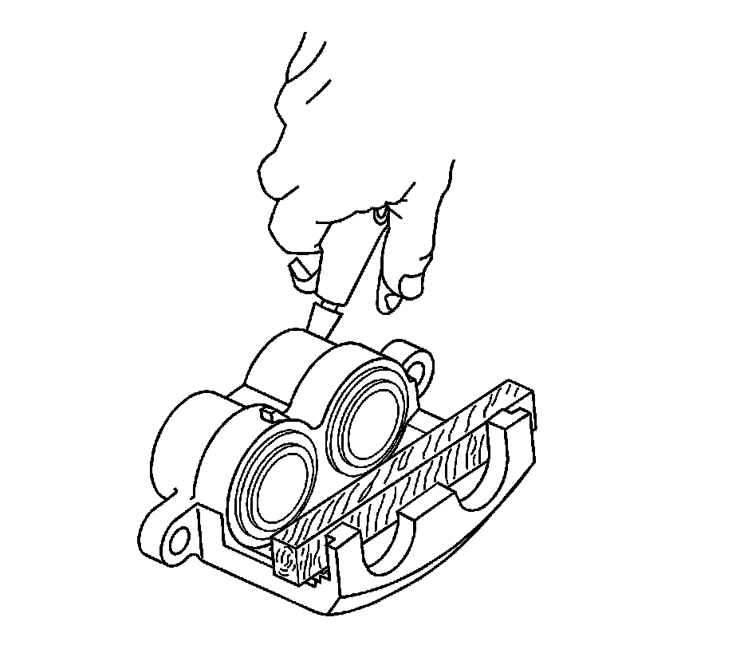
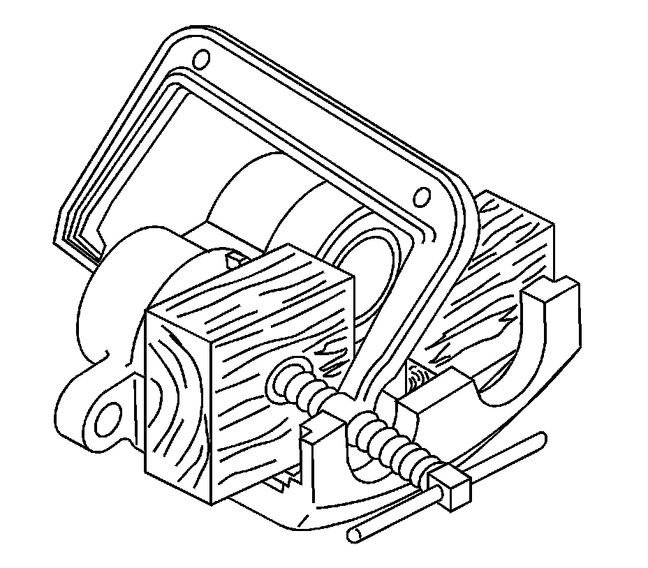
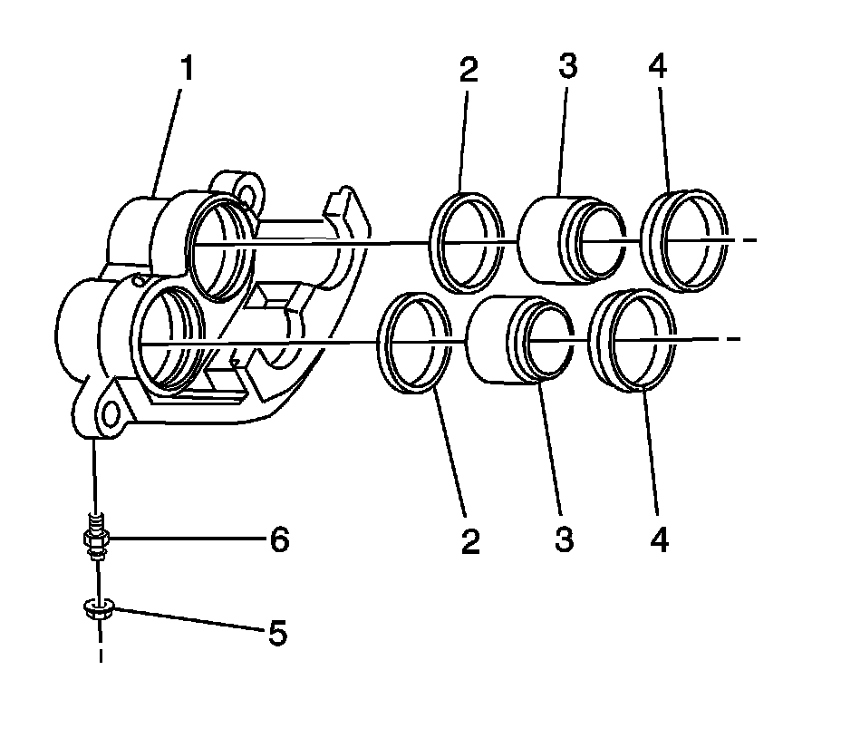
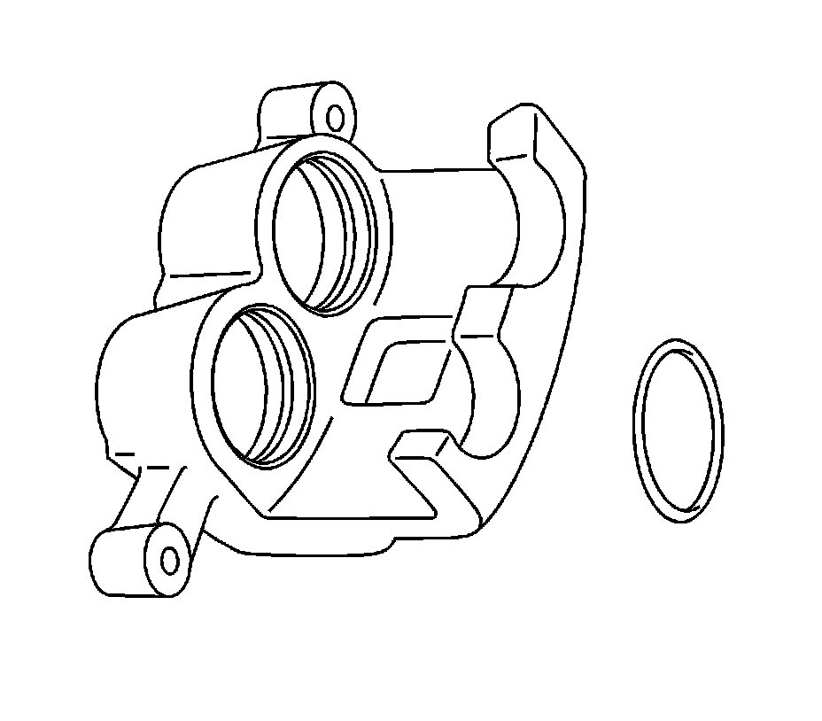
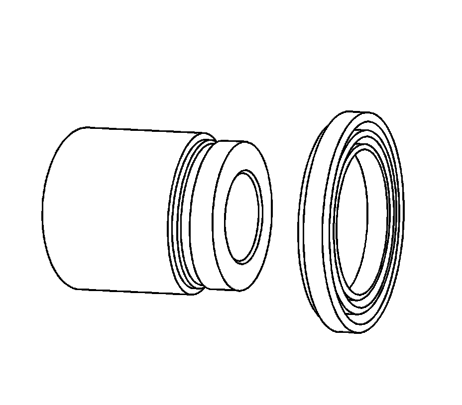
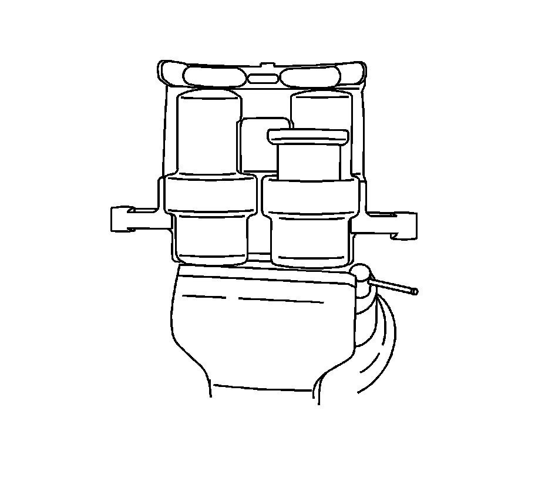
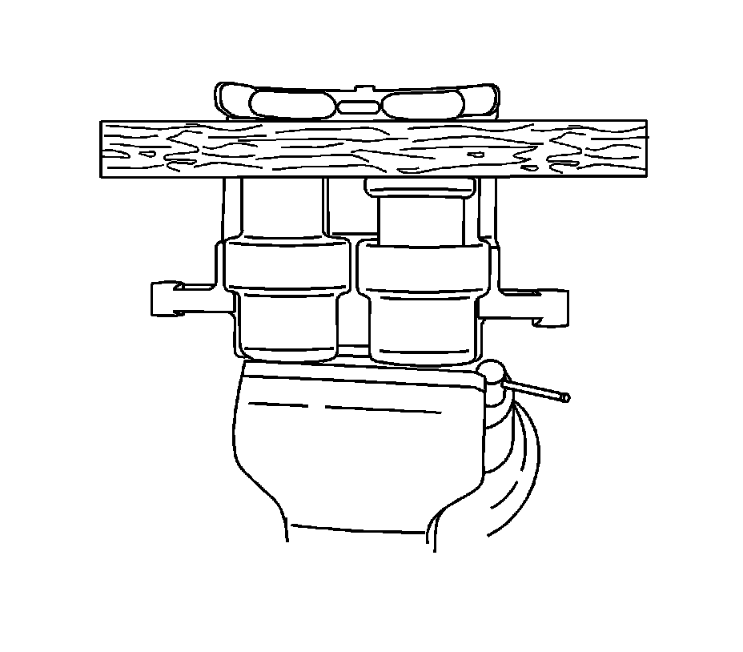
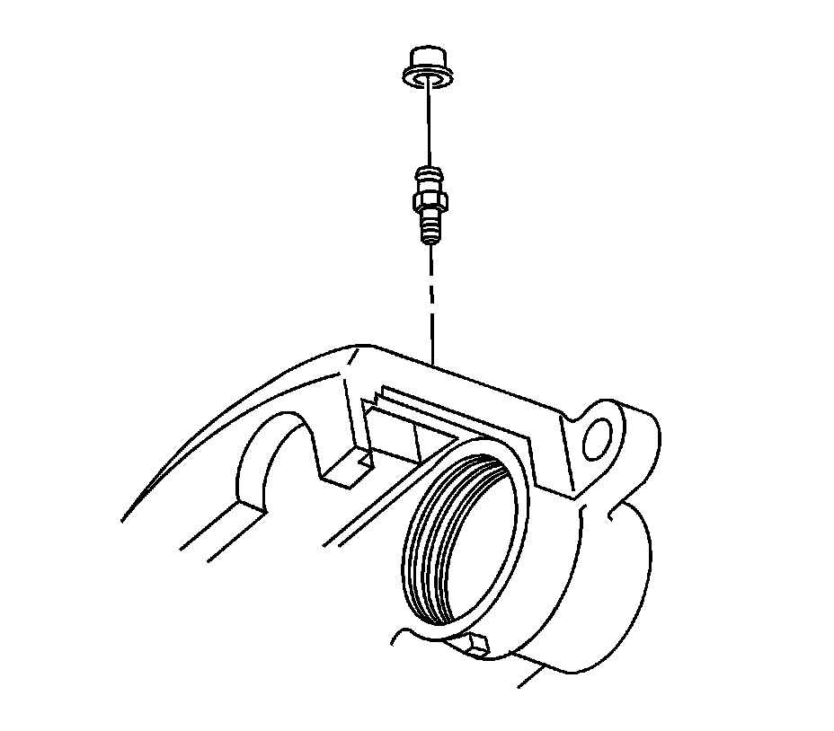

Rear Brake Caliper Overhaul (2500 Series)
Rear Brake Caliper Overhaul (2500 Series)
Caution: Refer to Brake Dust Caution.
Caution: Refer to Brake Fluid Irritant Caution.
Disassembly Procedure
1. Remove the brake caliper.
2. Drain all the brake fluid from the caliper.
Important: The brake calipers use phenolic pistons with stainless steel caps which contact the brake pads. Use compressed air to remove the piston from the brake caliper.
3. Secure the brake caliper in a suitable holding device.
4. Insert a piece of wood in the brake caliper between the pistons and the outer bridge.

5. Cover the brake caliper with a shop towel.
6. Apply filtered, non-lubricated compressed air into the brake hose inlet fitting port of the brake caliper.

7. If one of the pistons fails to be removed from the brake caliper, perform the following steps.
1. Reposition the piston that has been removed back into the brake caliper.
2. Using a small block of wood and a C-clamp, slowly tighten the C-clamp until the piston is half way into the brake caliper. It does not have to be fully seated.
3. Position a second block of wood in front of the piston that remains in the brake caliper.
4. Cover the brake caliper with a shop towel.
5. Apply filtered, non-lubricated compressed air into the brake hose inlet fitting port of the brake caliper.

8. Remove the pistons (3) from the caliper bores.
9. Remove the boots (4) from the caliper bores. Do not scratch the caliper bores.
10. Remove the piston seals (2) from the caliper bores. Do not use a metal tool.
11. Remove the bleeder valve cap (5).
12. Remove the bleeder valve (6) from the caliper housing (1).
13. Clean the bleeder valve, the caliper bores, the caliper passages and the pistons with denatured alcohol. Dry the parts and blow out the brake fluid passages using filtered, non-lubricated compressed air.
14. Replace the pistons or the caliper if any of the following conditions exist:
^ Scoring in the caliper bores
^ Corrosion in the caliper bores
^ Pitting in the caliper bores
^ Damage to the pistons (phenolic)
15. Clean the brake caliper assembly with denatured alcohol.
16. Dry with filtered, non-lubricated compressed air.
Assembly Procedure
Important: When applying the clean brake fluid to the piston bores, piston seals and pistons, only apply the brake fluid to one bore at a time. This is done to ensure the brake caliper, seals and pistons DO NOT become contaminated with dirt or other foreign material.
1. Apply a small amount of clean DOT-3 brake fluid to the piston, piston seal, and piston bore.

2. Install the square-cut piston seal in the brake caliper bore groove.
3. Ensure the square-cut piston seal is not twisted.

4. Install the boot over the end of the piston so the fold will face toward the brake caliper housing piston bore opening.

Important: Position the piston in the bore so that it is straight and level.
5. Position the piston to the brake caliper bore and seat the boot into the brake caliper bore groove.

6. Position a piece of wood across the piston to be installed.
7. Applying equal pressure by hand while pushing down, install the piston in the bore.
8. Remove the piece of wood.

Notice: Refer to Fastener Notice.
9. Install the bleeder valve in the brake caliper housing.
Tighten the bleeder valve to 12 N.m (106 lb in).
10. Install the bleeder valve cap.
11. Install the brake caliper.